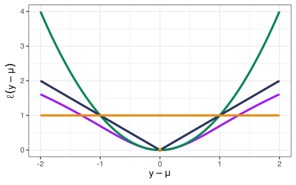
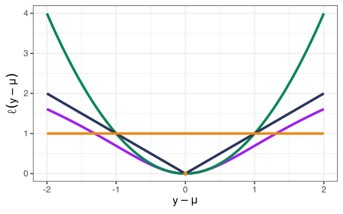

Stat 550
Daniel J. McDonald
Last modified – 03 April 2024
\[ \DeclareMathOperator*{\argmin}{argmin} \DeclareMathOperator*{\argmax}{argmax} \DeclareMathOperator*{\minimize}{minimize} \DeclareMathOperator*{\maximize}{maximize} \DeclareMathOperator*{\find}{find} \DeclareMathOperator{\st}{subject\,\,to} \newcommand{\E}{E} \newcommand{\Expect}[1]{\E\left[ #1 \right]} \newcommand{\Var}[1]{\mathrm{Var}\left[ #1 \right]} \newcommand{\Cov}[2]{\mathrm{Cov}\left[#1,\ #2\right]} \newcommand{\given}{\mid} \newcommand{\X}{\mathbf{X}} \newcommand{\x}{\mathbf{x}} \newcommand{\y}{\mathbf{y}} \newcommand{\P}{\mathcal{P}} \newcommand{\R}{\mathbb{R}} \newcommand{\norm}[1]{\left\lVert #1 \right\rVert} \newcommand{\snorm}[1]{\lVert #1 \rVert} \newcommand{\tr}[1]{\mbox{tr}(#1)} \newcommand{\U}{\mathbf{U}} \newcommand{\D}{\mathbf{D}} \newcommand{\V}{\mathbf{V}} \renewcommand{\hat}{\widehat} \]
In statistics, “model” has a mathematical meaning.
Distinct from “algorithm” or “procedure”.
Defining a model often leads to a procedure/algorithm with good properties.
Sometimes procedure/algorithm \(\Rightarrow\) a specific model.
Statistics (the field) tells me how to understand when different procedures are desirable and the mathematical guarantees that they satisfy.
When are certain models appropriate?
One definition of “Statistical Learning” is the “statistics behind the procedure”.
We observe data \(Z_1,\ Z_2,\ \ldots,\ Z_n\) generated by some probability distribution \(P\). We want to use the data to learn about \(P\).
A statistical model is a set of distributions \(\mathcal{P}\).
Some examples:
We want to use the data to select a distribution \(P\) that probably generated the data.
\[ \P = \{ P(z=1)=p,\ P(z=0)=1-p,\ 0 < p < 1 \} \]
To completely characterize \(P\), I just need to estimate \(p\).
Need to assume that \(P \in \P\).
This assumption is mostly empty: need independent, can’t see \(z=12\).
We observe data \(Z_i=(Y_i,X_i)\) generated by some probability distribution \(P\). We want to use the data to learn about \(P\).
\[ \P = \{ \beta \in \R^p, \sigma>0 : Y_i \given X_i=x_i \sim N(x_i^\top\beta,\ \sigma^2) \}. \]
To completely characterize \(P\), I just need to estimate \(\beta\) and \(\sigma\).
Need to assume that \(P\in\P\).
This time, I have to assume a lot more: (conditional) Linearity, independence, conditional Gaussian noise, no ignored variables, no collinearity, etc.
We observe data \(Z_i \in \R\) generated by some probability distribution \(P\). We want to use the data to learn about \(P\).
\[ \P = \{ Z_i \textrm{ has a density function } f \}. \]
To completely characterize \(P\), I need to estimate \(f\).
In fact, we can’t hope to do this.
Revised Model 1 - \(\P=\{ Z_i \textrm{ has a density function } f : \int (f'')^2 dx < M \}\)
Revised Model 2 - \(\P=\{ Z_i \textrm{ has a density function } f : \int (f'')^2 dx < K < M \}\)
Revised Model 3 - \(\P=\{ Z_i \textrm{ has a density function } f : \int |f'| dx < M \}\)
Imagine \(Z = (Y, \mathbf{X}) \sim P\) with \(Y \in \R\) and \(\mathbf{X} = (1, X_1, \ldots, X_p)^\top\).
We are interested in the conditional distribution \(P_{Y|\mathbf{X}}\)
Suppose we think that there is some function of interest which relates \(Y\) and \(X\).
Let’s call this function \(\mu(\mathbf{X})\) for the moment. How do we estimate \(\mu\)? What is \(\mu\)?
To make this precise, we
Given a new (random) \(Z\), \(\mu(\mathbf{X})\) is “close” to \(Y\).
We need more functions.
Choose some loss function \(\ell\) that measures how close \(\mu\) and \(Y\) are.
Squared-error:
\(\ell(y,\ \mu) = (y-\mu)^2\)
Absolute-error:
\(\ell(y,\ \mu) = |y-\mu|\)
Zero-One:
\(\ell(y,\ \mu) = I(y\neq\mu)=\begin{cases} 0 & y=\mu\\1 & \mbox{else}\end{cases}\)
Cauchy:
\(\ell(y,\ \mu) = \log(1 + (y - \mu)^2)\)

Let’s try to minimize the expected squared error (MSE).
Claim: \(\mu(X) = \Expect{Y\ \vert\ X}\) minimizes MSE.
That is, for any \(r(X)\), \(\Expect{(Y - \mu(X))^2} \leq \Expect{(Y-r(X))^2}\).
Proof of Claim:
\[\begin{aligned} \Expect{(Y-r(X))^2} &= \Expect{(Y- \mu(X) + \mu(X) - r(X))^2}\\ &= \Expect{(Y- \mu(X))^2} + \Expect{(\mu(X) - r(X))^2} \\ &\quad +2\Expect{(Y- \mu(X))(\mu(X) - r(X))}\\ &=\Expect{(Y- \mu(X))^2} + \Expect{(\mu(X) - r(X))^2} \\ &\quad +2(\mu(X) - r(X))\Expect{(Y- \mu(X))}\\ &=\Expect{(Y- \mu(X))^2} + \Expect{(\mu(X) - r(X))^2} + 0\\ &\geq \Expect{(Y- \mu(X))^2} \end{aligned}\]Sometimes people call this solution:
\[\mu(X) = \Expect{Y \ \vert\ X}\]
the regression function. (But don’t forget that it depended on \(\ell\).)
If we assume that \(\mu(x) = \Expect{Y \ \vert\ X=x} = x^\top \beta\), then we get back exactly OLS.
But why should we assume \(\mu(x) = x^\top \beta\)?
Some notation / terminology
“Hats” on things mean “estimates”, so \(\widehat{\mu}\) is an estimate of \(\mu\)
Parameters are “properties of the model”, so \(f_X(x)\) or \(\mu\) or \(\Var{Y}\)
Random variables like \(X\), \(Y\), \(Z\) may eventually become data, \(x\), \(y\), \(z\), once observed.
“Estimating” means “using observations to estimate parameters”
“Predicting” means “using observations to predict future data”
Often, there is a parameter whose estimate will provide a prediction.
“Non-parametric” means “we don’t assume a parametric form” for the regression function (or density)
In consulting, you’re usually interested in estimating parameters accurately.
This is a departure from machine learning, when you want to predict new data.
But to “select a model”, we may have to choose between plausible alternatives.
This can be challenging to understand.
Given the training data \(\mathcal{D}\), we want to predict some independent test data \(Z = (X,Y)\)
This means forming a \(\hat f\), which is a function of both the range of \(X\) and the training data \(\mathcal{D}\), which provides predictions \(\hat Y = \hat f(X)\).
The quality of this prediction is measured via the prediction risk \[R(\hat{f}) = \Expect{(Y - \hat{f}(X))^2}.\]
We know that the regression function, \(\mu(X) = \mathbb{E}[Y \mid X]\), is the best possible predictor.
Recall that \(\mathcal{D}\) is the training data.
\[R_n(f) := \Expect{L(Y,f(X))} = \Expect{\Expect{L(Y,f(X)) \given \mathcal{D}}}\]
(Hastie, Tibshirani, and Friedman 2009)
We want to do model selection for at least three reasons:
These last two can occasionally be ok, but aren’t in general. You should investigate the assumptions that are implicit in them.
\[\overline{R}_n(f) = \E_{Y_1,\ldots,Y_n}\left[\E_{Y^0}\left[\frac{1}{n}\sum_{i=1}^n L(Y^0_i,\hat{f}(x_i))\given \mathcal{D}\right]\right].\]
For many \(L\) and some predictor \(\hat{f}\), one can show
\[\overline{R}_n(\hat{f}) = \Expect{\hat{R}_n(\hat{f})} + \frac{2}{n} \sum_{i=1}^n \Cov{Y_i}{\hat{f}(x_i)}.\]
This suggests estimating \(\overline{R}_n(\hat{f})\) with
\[\hat{R}_{\textrm{gic}} := \hat{R}_n(\hat{f}) + \textrm{pen}.\]
If \(\Expect{\textrm{pen}} = \frac{2}{n}\sum_{i=1}^n \Cov{Y_i}{\hat{f}(x_i)}\), we have an unbiased estimator of \(\overline{R}_n(\hat{f})\).
Suppose we observe the following data:
\[Y_i = \beta_i + \epsilon_i, \quad\quad i=1,\ldots,n\]
where \(\epsilon_i\overset{iid}{\sim} \mbox{N}(0,1)\).
We want to estimate \[\boldsymbol{\beta} = (\beta_1,\ldots,\beta_n).\]
The usual estimator (MLE) is \[\widehat{\boldsymbol{\beta}}^{MLE} = (Y_1,\ldots,Y_n).\]
This estimator has lots of nice properties: consistent, unbiased, UMVUE, (asymptotic) normality…
But, the standard estimator STINKS! It’s a bad estimator.
It has no bias, but big variance.
\[R_n(\widehat{\boldsymbol{\beta}}^{MLE}) = \mbox{bias}^2 + \mbox{var} = 0 + n\cdot 1= n\]
What if we use a biased estimator?
Consider the following estimator instead: \[\widehat{\beta}_i^S = \begin{cases} Y_i & i \in S\\ 0 & \mbox{else}. \end{cases}\]
Here \(S \subseteq \{1,\ldots,n\}\).
What is the risk of this estimator?
\[ R_n(\widehat{\boldsymbol{\beta}}^S) = \sum_{i\not\in S} \beta_i^2 + |S|. \]
In other words, if some \(|\beta_i| < 1\), then don’t bother estimating them!
In general, introduced parameters like \(S\) will be called tuning parameters.
Of course we don’t know which \(|\beta_i| < 1\).
But we could try to estimate \(R_n(\widehat{\boldsymbol{\beta}}^S)\), and choose \(S\) to minimize our estimate.
Although
\[\widehat{R}_n(\widehat{\boldsymbol{\beta}}) \approx R_n(\widehat{\boldsymbol{\beta}}),\] this approximation can be very bad. In fact:
In this case, the optimism of the training error is \(n\).
What about \(\widehat{\boldsymbol{\beta}}^S\)?
\[\widehat{R}_n(\widehat{\boldsymbol{\beta}}^S) = \sum_{i=1}^n (\widehat{\beta_i}- Y_i)^2 = \sum_{i \notin S} Y_i^2 %+ |S|\sigma^2\]
Well \[\E\left[\widehat{R}_n(\widehat{\boldsymbol{\beta}}^S)\right] = R_n(\widehat{\boldsymbol{\beta}}^S) - 2|S| +n.\]
So I can choose \(S\) by minimizing \(\widehat{R}_n(\widehat{\boldsymbol{\beta}}^S) + 2|S|\).
\[\mbox{Estimate of Risk} = \mbox{training error} + \mbox{penalty}.\]
The penalty term corrects for the optimism.
pen() in the nice casesResult:
Suppose \(\hat{f}(x_i) = HY\) for some matrix \(H\), and \(Y_i\)’s are IID. Then
\[\frac{2}{n} \sum_{i=1}^n \Cov{Y_i}{\hat{f}(x_i)} = \frac{2}{n} \sum_{i=1}^n H_{ii} \Cov{Y_i}{Y_i} = \frac{2\Var{Y}}{n} \tr{H}.\]
\[H = X^\top (X^\top X)^{-1} X^\top \Rightarrow \tr{H} = \textrm{rank}(X) = p\]
\[H = X^\top (X^\top X + \lambda I_p)^{-1} X^\top \Rightarrow \tr{H} = \sum_{i=1}^p \frac{d_i^2}{d_i^2 + \lambda} < \min\{p,n\}\]
This isn’t the way everyone introduces/conceptualizes prediction risk.
For me, thinking of \(\hat{R}_n\) as overly optimistic and correcting for that optimism is conceptually appealing
An alternative approach is to discuss information criteria.
In this case one forms a (pseudo)-metric on probability measures.
Suppose we have data \(Y\) that comes from the probability density function \(f\).
What happens if we use the probability density function \(g\) instead?
How far away are we? We can either compare \(\mu\) to \(\mu_*\) or \(Y\) to \(Y^*\).
Or, we can compute how far \(f\) is from \(g\).
We need a notion of distance.
Kullback–Leibler divergence (or discrepancy)
\[\begin{aligned} KL(f\;\Vert\; g) & = \int \log\left( \frac{f(y)}{g(y)} \right)f(y) dy \\ & \propto -\int \log (g(y)) f(y) dy \qquad \textrm{(ignore term without $g$)}\\ & = -\mathbb{E}_f [\log (g(Y))] \end{aligned}\]
Measures the loss incurred by (incorrectly) using \(g\) instead of \(f\).
KL is not symmetric: \(KL(f\;\Vert\; g) \neq KL(g\;\Vert\; f)\), so it’s not a distance, but it is non-negative and satisfies the triangle inequality.
Usually, \(f,\ g\) will depend on some parameters, call them \(\theta\)
Suppose \(Y\) comes from the standard normal linear regression model with known variance \(\sigma^2\).
\[ \begin{aligned} -\log(g_{\hat{\theta}}) &\propto \log(\sigma^2) + \frac{1}{2\sigma^2}\sum_{i=1}^n (y_i - x_i^\top \hat{\beta}_{MLE})^2\\ \Rightarrow AIC &= 2\frac{n}{2\sigma^2}\hat{R}_n + 2p = \hat{R}_n + \frac{2\sigma^2}{n} p. \end{aligned} \]
Suppose \(Y\) comes from the standard normal linear regression model with unknown variance \(\sigma^2\).
Note that \(\hat{\sigma}_{MLE}^2 = \frac{1}{n} \sum_{i=1}^n (y_i-x_i^\top\hat{\beta}_{MLE})^2\).
\[ \begin{aligned} -\log(g_{\hat{\theta}}) &\propto \frac{n}{2}\log(\hat{\sigma}^2) + \frac{1}{2\hat{\sigma^2}}\sum_{i=1}^n (y_i - x_i^\top \hat{\beta}_{MLE})^2\\ \Rightarrow AIC &\propto 2 n\log(\hat{\sigma}^2)/2 + 2(p+1) \propto \log(\hat{R}_n) + \frac{2(p+1)}{n}. \end{aligned} \]
\[C_p = \hat{R}_n + 2\sigma^2 \frac{\textrm{df}}{n} = AIC\]
For Bayesian Analysis, we want the posterior. Suppose we have two models A and B.
\[ \begin{aligned} P(B\given \mathcal{D}) &= \frac{P(\mathcal{D}\given B)P(B)}{P(\mathcal{D})} \propto P(\mathcal{D}\given B)P(B)\\ P(A\given \mathcal{D}) &= \frac{P(\mathcal{D}\given A)P(A)}{P(\mathcal{D})} \propto P(\mathcal{D}\given A)P(A) \end{aligned} \] We assume that \(P(A) = P(B)\). Then to compare, \[ \frac{P(B\given \mathcal{D})}{P(A\given \mathcal{D})} = \frac{P(\mathcal{D}\given B)} {P(\mathcal{D}\given A)}. \]
\[\log P(\mathcal{D}\given B) = \log P(\mathcal{D} \given \hat{\theta},\ B) -\frac{p\log(n)}{2} + O(1) \]
Multiply through by \(-2\): \[ BIC = -\log (g_\theta(Y)) + p\log(n) = \log(\hat{R}_n) + \frac{p\log(n)}{n} \]
Also called Schwarz IC. Compare to AIC (variance unknown case)
\[\hat{R}_{gic} := \hat{R}_n(\hat{f}) + \textrm{pen}.\]
If \(\Expect{\textrm{pen}} = \frac{2}{n}\sum_{i=1}^n \Cov{Y_i}{\hat{f}(x_i)}\), we have an unbiased estimator of \(\overline{R}_n(\hat{f})\).
\[\frac{1}{\sigma^2} \sum_{i=1}^n\Cov{Y_i}{\hat{f}_i(Y)} = \Expect{\sum_{i=1}^n \frac{\partial f_i}{\partial y_i} \hat{f}(Y)}.\]
\[SURE = \hat{R}_n(\hat{f}) + 2\sigma^2 \sum_{i=1}^n \frac{\partial f_i}{\partial y_i} \hat{f}(Y) - n\sigma^2.\]
If \(f(Y) = HY\) is linear, we’re back to AIC (variance known case)
If \(\sigma^2\) is unknown, may not be unbiased anymore. May not care.
One reason that \(\widehat{R}_n(\widehat{f})\) is bad is that we are using the same data to pick \(\widehat{f}\) AND to estimate \(R_n\).
“Validation set” fixes this, but holds out a particular, fixed block of data we pretend mimics the “test data”
What if we set aside one observation, say the first one \((y_1, x_1)\).
We estimate \(\widehat{f}^{(1)}\) without using the first observation.
Then we test our prediction:
\[\widetilde{R}_1(\widehat{f}^{(1)}) = (y_1 -\widehat{f}^{(1)}(x_1))^2.\]
(why the notation \(\widetilde{R}_1\)? Because we’re estimating the risk with 1 observation. )
But that was only one data point \((y_1, x_1)\). Why stop there?
Do the same with \((y_2, x_2)\)! Get an estimate \(\widehat{f}^{(2)}\) without using it, then
\[\widetilde{R}_1(\widehat{f}^{(2)}) = (y_2 -\widehat{f}^{(2)}(x_2))^2.\]
We can keep doing this until we try it for every data point.
And then average them! (Averages are good)
\[\mbox{LOO-CV} = \frac{1}{n}\sum_{i=1}^n \widetilde{R}_1(\widehat{f}^{(i)}) = \frac{1}{n}\sum_{i=1}^n (y_i - \widehat{f}^{(i)}(x_i))^2\]
This is leave-one-out cross validation
🤮 Each held out set is small \((n=1)\). Therefore, the variance of the Squared Error of each prediction is high.
🤮 The training sets overlap. This is bad.
🤮 We have to estimate this model \(n\) times.
🎉 Bias is low because we used almost all the data to fit the model: \(E[\mbox{LOO-CV}] = R_{n-1}\)
To alleviate some of these problems, people usually use \(K\)-fold cross validation.
The idea of \(K\)-fold is
🎉 Less overlap, smaller covariance.
🎉 Larger hold-out sets, smaller variance.
🎉 Less computations (only need to estimate \(K\) times)
🤮 LOO-CV is (nearly) unbiased for \(R_n\)
🤮 K-fold CV is unbiased for \(R_{n(1-1/K)}\)
The risk depends on how much data you use to estimate the model. \(R_n\) depends on \(n\).
UBC Stat 550 - 2024